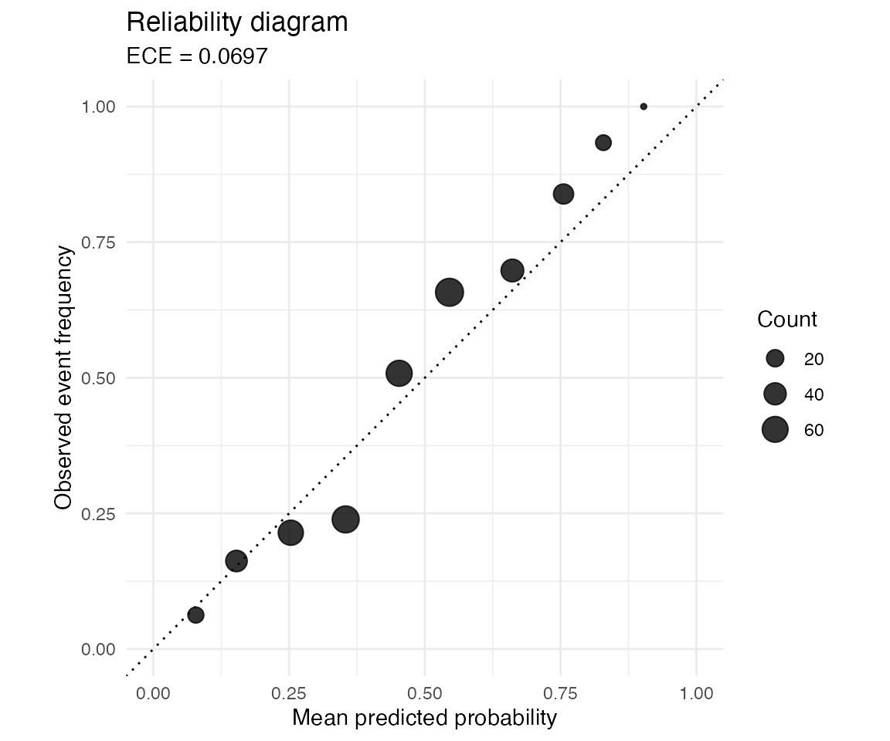

library(probcal)
library(dplyr)
#>
#> Attaching package: 'dplyr'
#> The following objects are masked from 'package:stats':
#>
#> filter, lag
#> The following objects are masked from 'package:base':
#>
#> intersect, setdiff, setequal, unionWhy calibration matters
A classifier can rank observations accurately while producing
probabilities that are not calibrated. A probability of 0.8
is calibrated only if events with that prediction occur about 80 percent
of the time. Calibration matters when a decision uses the numerical
probability, for example in risk thresholds or cost sensitive decisions.
It matters less when only the ranking is used.
A three-split workflow
Calibration should be fitted on data not used to train the classifier. A common workflow uses three parts: a model training set, a calibration set, and a test set. This vignette starts from already computed probabilities, so only the calibration and test split are shown.
set.seed(2026)
n <- 800
predictions <- data.frame(x = rnorm(n)) |>
mutate(
true_p = inv_logit(-0.5 + 1.2 * x),
y = rbinom(n(), 1, true_p),
raw_logits = 1.7 * (-0.5 + 1.2 * x),
raw_p = inv_logit(raw_logits),
split = sample(rep(c("calibration", "test"), each = n / 2))
)
calibration <- predictions |>
filter(split == "calibration")
test <- predictions |>
filter(split == "test")Fit a calibrator
Beta calibration works directly on probabilities. It is a useful default when the raw model probabilities show sigmoid-shaped miscalibration.
Compare methods
The package exposes the main binary calibration methods through the same fit-predict pattern.
platt_fit <- cal_platt(calibration$raw_p, calibration$y)
iso_fit <- cal_isotonic(calibration$raw_p, calibration$y)
hist_fit <- cal_histogram(calibration$raw_p, calibration$y, bins = 10)
temp_fit <- cal_temperature(calibration$raw_logits, calibration$y)
test <- test |>
mutate(
platt = predict(platt_fit, raw_p),
isotonic = predict(iso_fit, raw_p),
histogram = predict(hist_fit, raw_p),
temperature = predict(temp_fit, raw_logits)
)
bind_rows(
test |> summarise(method = "raw", ece = ece(raw_p, y, bins = 10)),
test |> summarise(method = "platt", ece = ece(platt, y, bins = 10)),
test |> summarise(method = "beta", ece = ece(beta, y, bins = 10)),
test |> summarise(method = "isotonic", ece = ece(isotonic, y, bins = 10)),
test |> summarise(method = "histogram", ece = ece(histogram, y, bins = 10)),
test |> summarise(method = "temperature", ece = ece(temperature, y, bins = 10))
) |>
arrange(ece)
#> method ece
#> 1 isotonic 0.03805771
#> 2 histogram 0.05704115
#> 3 beta 0.06968204
#> 4 platt 0.07440266
#> 5 temperature 0.07679482
#> 6 raw 0.10446875Reliability diagram
The reliability diagram shows calibration by bin. Points close to the diagonal have similar mean predicted probability and observed event frequency.
reliability_diagram(test$beta, test$y, bins = 10)
Cross-validated calibration
When the calibration set is small, cal_cv() produces
out-of-fold calibrated probabilities while also fitting a final
calibrator on all observations.
Optional reference validation
The package includes optional tests that compare selected results against external reference implementations. These tests are not run for ordinary users unless the optional dependencies are installed.
| Reference | What is compared | Package dependency |
|---|---|---|
Python netcal
|
ece(), mce(), ace()
|
reticulate and Python netcal
|
Python netcal
|
cal_histogram() with equal-width bins |
reticulate and Python netcal
|
R betacal
|
cal_beta() predictions |
betacal |
This keeps the runtime package in R while still allowing numerical checks against the reference implementation during development.